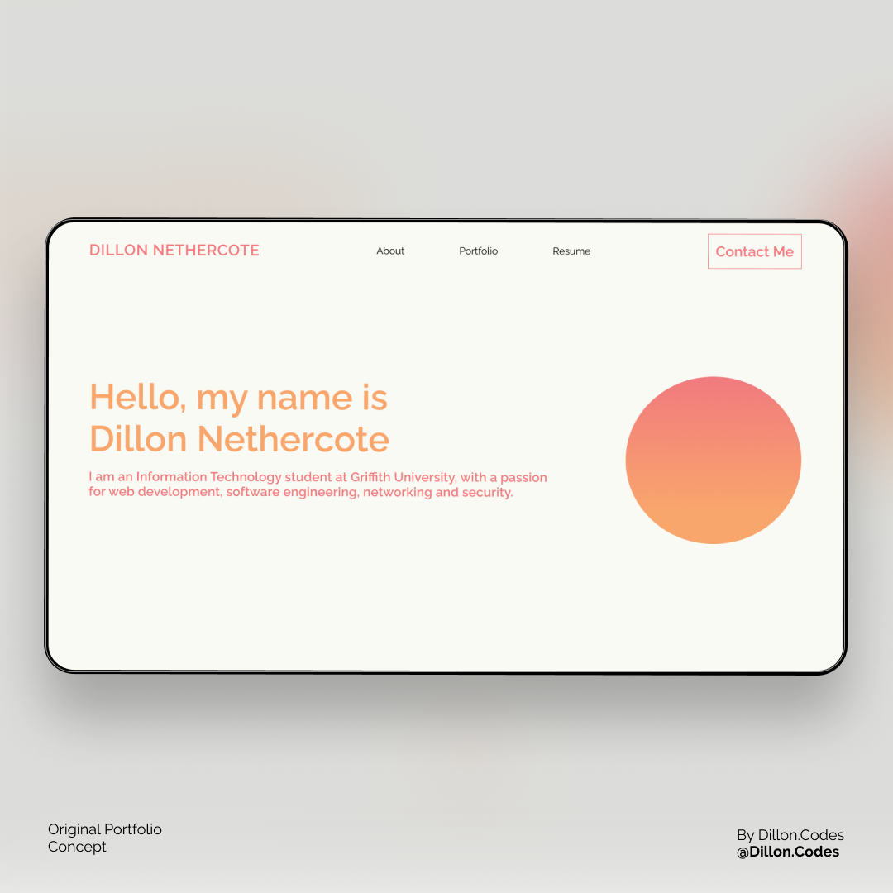

Portfolio Project 4: Portfolio Concept
This is my actual portfolio, written and created completely by myself. Its minimalistic design and lack of any defining features such as a profile picture or a skills section is quite sort after in the web development space. However, its complete lack of defining features would not be sufficient for this assignment and therefore I did not use it. In reality its a work in progress, and nothing more than a home page, but if you're interested, visit nethercote.net.